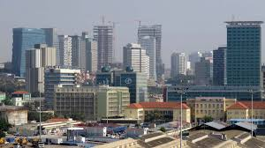

Abdullahi Ovayoza Grace
About me

My name is Abdullahi Ovayoza Grace, I'm currently a BYU Pathway student, my place of origin is Nigeria and I stay in Ibadan Nigeria. I enjoy singing and listening to musics. I love to sing and I love nature(exploring the natural things of life).
Ibadan, Nigeria
Nigeria is a country in West Africa known for its diverse cultures, languages, ethnicities and rich history becoming Africa's most populous country. Ibadan is one of the largest cities in Nigeria and is located in the South-West region.